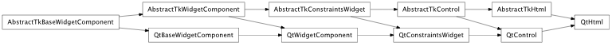
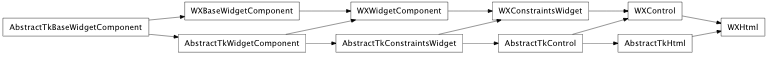

Bases: enaml.components.control.Control
An extremely simple widget for displaying HTML.
The Html source code to be rendered.
How strongly a component hugs it’s contents’ width. Html widgets
How strongly a component hugs it’s contents’ height. Html widgets ignore the height hug by default, so they expand freely in height.
Overridden parent class trait
alias of __NoInterface__

Bases: enaml.backends.qt.qt_control.QtControl, enaml.components.html.AbstractTkHtml
A Qt implementation of Html.

Bases: enaml.backends.wx.wx_control.WXControl, enaml.components.html.AbstractTkHtml
A wxPython implementation of Html